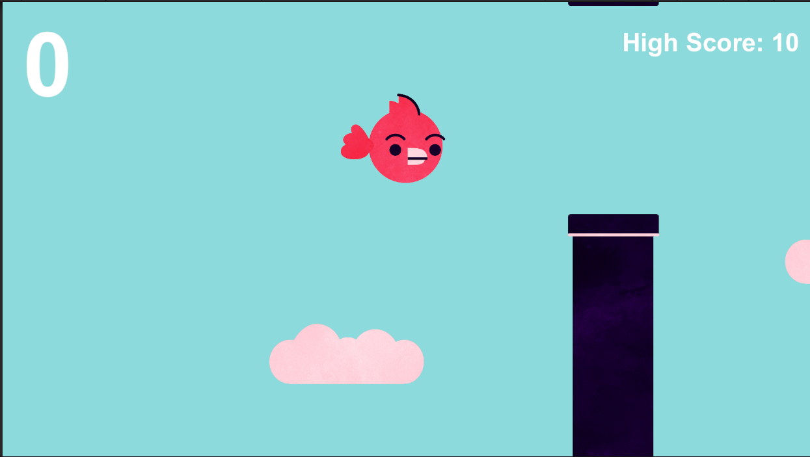

Flap Bird
PROJECT TYPE
Personal Project - Unity, C#
Description
FlapBirds is a simple game where players control a bird to navigate through obstacles.
LAST UPDATED
2024
Development Team
- Zack Cornfield
Trailer
Features
Intuitive Controls
Flap Control: Players control the bird by pressing the space bar to flap its wings, causing it to ascend. Releasing the space bar allows the bird to descend due to gravity.
Score Tracking
High Score Tracking: Keeps track of the highest score achieved and displays it during gameplay.
Obstacles
Pipes are the main obstacles in the game. They spawn at random heights from the right side of the screen and move leftward. Players must navigate the bird through the gaps between the pipes.
Each set of pipes is randomly positioned vertically to ensure variability and challenge in each playthrough.